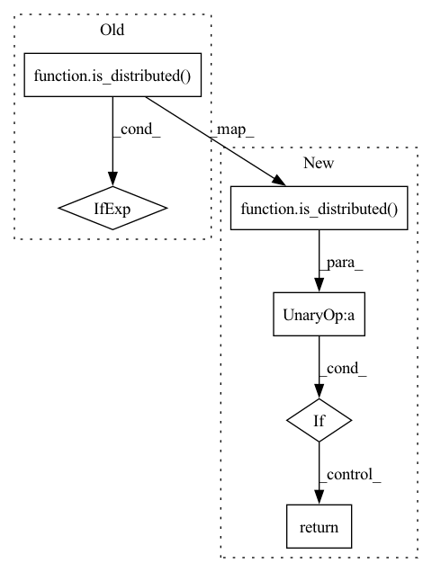

Pattern ID :39599
Before Change
def get_dist_info(group=dist.group.WORLD):
return (get_rank(group=group),
get_world_size(group=group)) if is_distributed() else (0, 1)
def is_main_process():After Change
def get_dist_info(group=None):
if not is_distributed() :
return 0, 1
group = group or dist.group.WORLD
return get_rank(group=group), get_world_size(group=group)
In pattern: SUPERPATTERN
Frequency: 3
Non-data size: 6
Instances Fragment ID: 112674303
Project Name: yeliudev/nncore
Commit Name: 67bdd644703e2fe3c003e1e0cd92136a6c26e898
Time: 2020-03-16
Author: goolhanrry@gmail.com
File Name: nncore/engine/comm.py
M Class Name: AnonimousClass
N Class Name: AnonimousClass
M Method Name: get_dist_info(1)
N Method Name: get_dist_info(1)
M Parent Class:
N Parent Class:
M File Name: nncore/engine/comm.py
N File Name: nncore/engine/comm.py
M Start Line: 77
M End Line: 78
N Start Line: 81
N End Line: 84
Before Change
def get_rank(group=dist.group.WORLD):
return dist.get_rank(group=group) if is_distributed() else 0
def get_world_size(group=dist.group.WORLD):After Change
def get_rank(group=None):
if not is_distributed() :
return 0
return dist.get_rank(group=group or dist.group.WORLD)
Fragment ID: 112674302
Project Name: yeliudev/nncore
Commit Name: 67bdd644703e2fe3c003e1e0cd92136a6c26e898
Time: 2020-03-16
Author: goolhanrry@gmail.com
File Name: nncore/engine/comm.py
M Class Name: AnonimousClass
N Class Name: AnonimousClass
M Method Name: get_rank(1)
N Method Name: get_rank(1)
M Parent Class:
N Parent Class:
M File Name: nncore/engine/comm.py
N File Name: nncore/engine/comm.py
M Start Line: 69
M End Line: 69
N Start Line: 69
N End Line: 71
Before Change
def get_world_size(group=dist.group.WORLD):
return dist.get_world_size(group=group) if is_distributed() else 1
def get_dist_info(group=dist.group.WORLD):After Change
def get_world_size(group=None):
if not is_distributed() :
return 1
return dist.get_world_size(group=group or dist.group.WORLD)
Fragment ID: 112674301
Project Name: yeliudev/nncore
Commit Name: 67bdd644703e2fe3c003e1e0cd92136a6c26e898
Time: 2020-03-16
Author: goolhanrry@gmail.com
File Name: nncore/engine/comm.py
M Class Name: AnonimousClass
N Class Name: AnonimousClass
M Method Name: get_world_size(1)
N Method Name: get_world_size(1)
M Parent Class:
N Parent Class:
M File Name: nncore/engine/comm.py
N File Name: nncore/engine/comm.py
M Start Line: 73
M End Line: 73
N Start Line: 75
N End Line: 77